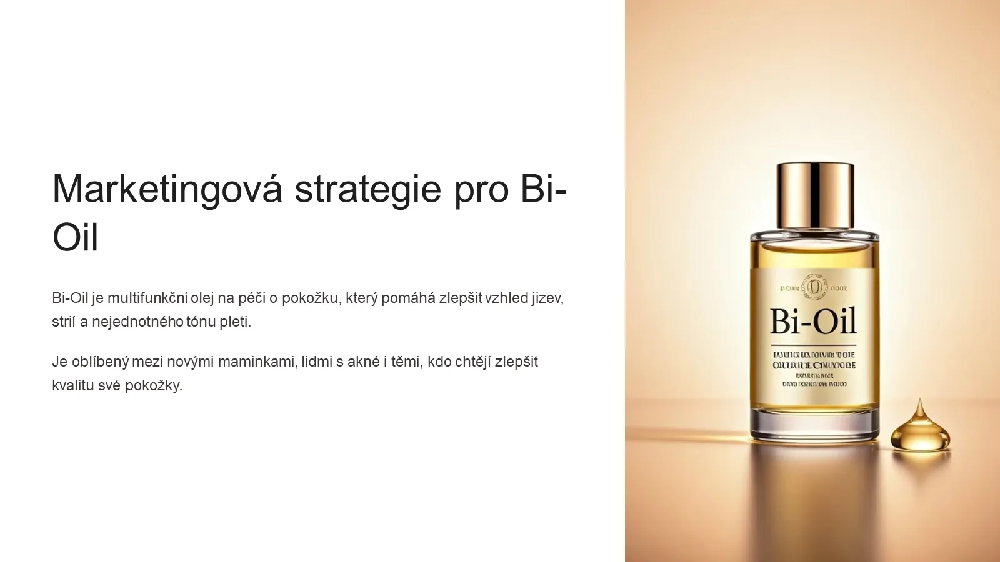

Маркетинговая стратегия Bi-Oil
Проект для клиента на рынке Чехии: стратегия продвижения многофункционального масла для ухода за кожей. Кому продавать, что обещать и где говорить с аудиторией.

Задача
Клиенту нужно было за один день получить маркетинговый пакет по бренду Bi-Oil для чешского рынка. В этой части задача – выделить сегменты аудитории, сформулировать уникальное торговое предложение и предложить каналы и форматы контента с измеримыми целями.
Что сделано
- Три сегмента аудитории: молодые мамы, работающие женщины в городах, активные пользовательницы соцсетей
- Карта проблем и потребностей: растяжки после беременности, следы акне, сухая кожа, нехватка времени
- Пирамида УТП: клинически подтверждённый эффект, быстрое впитывание, безопасность для беременных, доступность
- Каналы продвижения: Instagram и TikTok, YouTube Shorts, аптеки, фитнес-центры, e-shopy
- Идеи контента: челлендж «7 дней с Bi-Oil», истории клиенток, советы дерматологов
- Пример поста и целевые метрики кампании: охват, рост конверсии и онлайн-продаж
Весь проект
Эта презентация – часть одного проекта для клиента, который я закрыла за 1 день:
- JTBD-анализ конкурентов Bi-Oil: Palmers, Mixa, Bioderma
- Сравнительная таблица болей аудитории, УТП и эмоций
- Две презентации: маркетинговая стратегия (эта) и анализ конкурентов
- Локализация маркетинговых текстов с английского на чешский с учётом эмоций, контекста и местных триггеров
- Карточки товаров для маркетплейсов, включая Blistex и Batiste